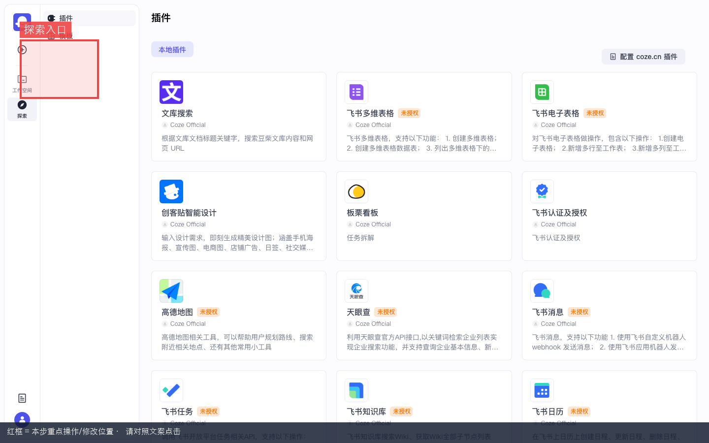
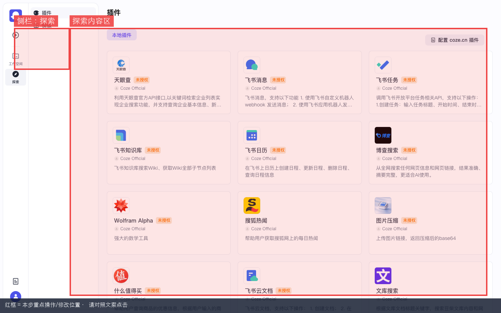
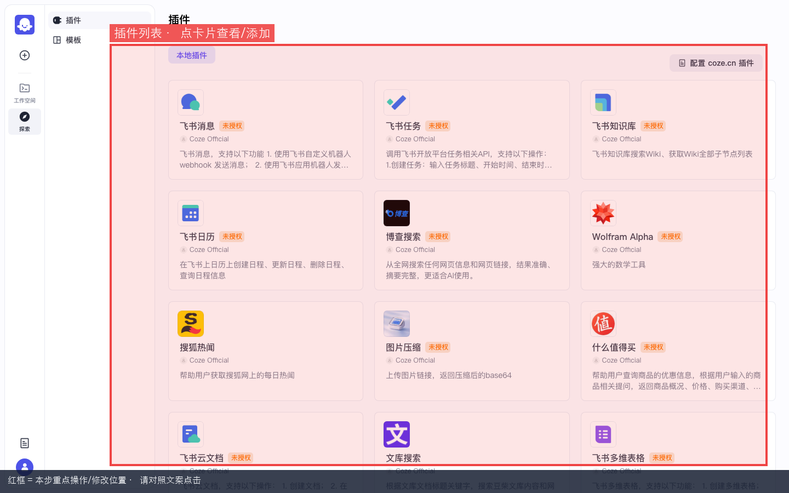
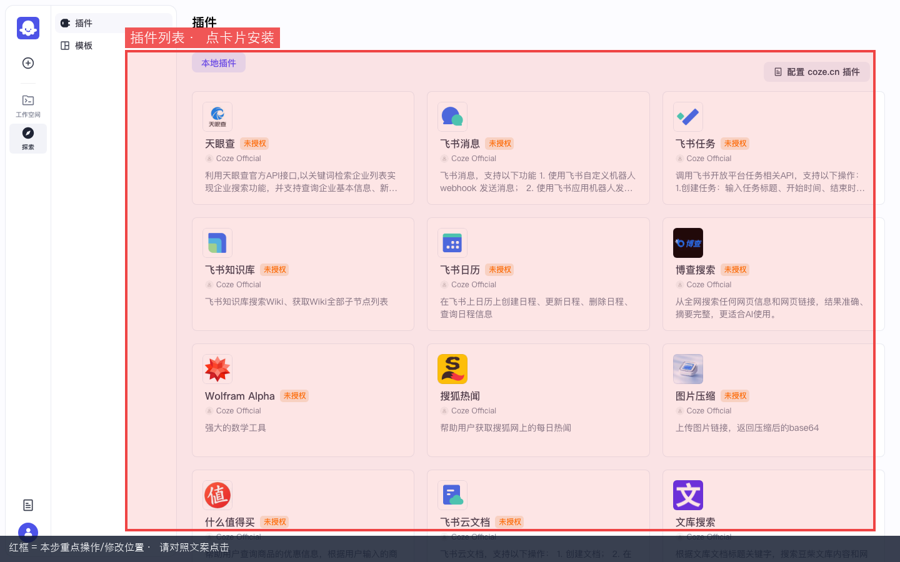

Coze 实战 · 第4课 · P05 · ≈40 min · 开源部分可用
P05 · 插件：探索安装与自定义
零基础跟做：在「探索」里找插件 → 安装到空间 → 配鉴权 → 不会用商店就自建 HTTP 插件 → 挂到智能体试一次调用。 前置：已完成 P04 知识库（建议也做过 P02 智能体）。
🎯 第4课目标走通「探索官方插件 / 鉴权意识 / 自定义 HTTP 插件」路径，至少完成一种可在智能体里引用的插件能力（官方授权或 httpbin 自定义兜底）。
0
什么是插件？本课要达成什么？
本步目的 / 作用：一句话：插件 = 把「外部能力」包装成工具，让智能体或工作流能主动调用（搜网页、查天气、调你自己的 API 等）。
| 概念 | 小白怎么理解 |
|---|---|
| 探索页插件 | 像应用商店，浏览别人做好的工具，点「添加」装进你的工作空间 |
| 资源库插件 | 你自己写的 HTTP API，在资源库里「+ 资源 → 插件」创建 |
| 挂到智能体 | 智能体 IDE 中间栏「技能 → 插件」里勾选，对话时模型可决定要不要调 |
| 挂到工作流 | 画布上加「插件」节点，按固定流程调用（第6课 P01 用 HTTP 节点，本课先学插件概念） |
开源版现实预期：探索里插件数量比商业版少；很多卡片点进去显示「未授权」。本课重点是走通整条路径——哪怕商店空，也能用自定义插件 + httpbin 演示完成验收。
1
打开探索页
本步目的 / 作用：探索是 Coze 的「能力市场」入口，插件、模板、工作流范例都从这里找。
- 登录后看浏览器左侧竖栏（工作空间导航）
- 找到并单击 探索（图标像指南针/发现，文案因版本略异）
- 地址栏应变成类似 /explore 或 /space/.../explore
- 页面顶部通常有 Tab：插件、工作流、智能体等——本课点 插件
- 或直接访问插件子页 /explore/plugin

图 1：探索页总览。注意顶部/左侧如何切换到「插件」分类。
红框标注 = 本步要点击 / 填写 / 观察的位置

图 2：探索页中的插件区域（实录截图）。
红框标注 = 本步要点击 / 填写 / 观察的位置
✅ 验收：能看到插件卡片列表或空状态提示，而不是 404 / 白屏。
找不到「探索」
确认 Docker 栈已启动（
make web 或 make debug）；刷新页面；有的布局把探索收在「更多」菜单里。
2
浏览插件列表，认识一张卡片
本步目的：完成「浏览插件列表，认识一张卡片」。请先看懂下方红框标注的截图，再按编号逐步操作；做完用验收行自检。
- 在插件列表页慢慢滚动，观察每张卡片上的：名称、简介、作者/来源标签
- 单击任意一张卡片（实录常见：飞书、搜索、地图类）进入详情
- 详情页通常有：功能说明、参数列表、添加 / 安装到空间 按钮
- 若显示 未授权 或需要 OAuth——先记下来，下一步处理鉴权

图 3：插件探索列表（实录）。每张卡片可点进详情。
红框标注 = 本步要点击 / 填写 / 观察的位置

图 4：更多插件卡片样式参考。
红框标注 = 本步要点击 / 填写 / 观察的位置
| 卡片上常见信息 | 你要做什么 |
|---|---|
| 「添加到工作空间」 | 点它，插件会出现在资源库 / 智能体技能可选列表 |
| 「需要授权」 | 安装后还要去插件设置页填 API Key 或走 OAuth |
| 「官方 / 社区」 | 开源版官方插件定义在仓库 backend/conf/plugin/pluginproduct/ |
| 列表为空 | 正常，直接跳到本章第 5 步「自定义插件」 |
3
安装插件到空间
本步目的 / 作用：「安装」= 把插件复制一份到你的 Personal Space，之后智能体和工作流才能引用。
- 在插件详情页，找到主按钮（文案可能是 添加、安装到空间、获取）
- 单击该按钮，等待 Toast 提示「添加成功」之类
- 打开 资源库（侧栏 /library），筛选或搜索刚装的插件名
- 或：进入 项目开发 → 智能体 → 打开 P02 的智能体 IDE → 中间栏 技能 → 插件 → +，看列表里是否出现
✅ 验收：资源库或智能体技能区能搜到该插件名称（哪怕状态是未授权）。
安装 ≠ 能直接用。很多插件必须配鉴权，否则调试永远失败。下一节专门讲这个。
4
鉴权配置（不配 = 调用必挂）
本步目的 / 作用：为什么：插件背后要调第三方 API（飞书、Google、交易所行情…），厂商要求你证明「我是谁」。
| 鉴权类型 | 你要准备什么 | 怎么配 |
|---|---|---|
| API Key / Token | 厂商控制台签发的密钥 | 插件设置页 → 鉴权 → 粘贴 Key → 保存 |
| OAuth 2.0 | 飞书/谷歌等账号授权 | 点「去授权」→ 浏览器跳转 → 同意 → 回调成功 |
| 无鉴权 HTTP | 你自己的演示 API | 适合本课自定义插件（见下一节） |
| Header 自定义 | 如 X-API-Key: xxx | 在插件工具定义里加 Header 参数 |
4.1 单工具调试（建议必做）
- 资源库 → 点开已安装的插件
- 左侧选某一个「工具」（Tool），右侧找 调试 / 试运行
- 填必填参数 → 点运行 → 看返回是否 200
- 若报「未授权」「401」→ 回到鉴权页补 Key 或 OAuth
踩坑：显示未授权仍在对话里硬测
智能体预览里只会看到「工具调用失败」，没有详细 JSON。正确顺序：先插件页单工具调试通，再挂到 Agent。
踩坑：OAuth 回调失败（本地部署）
开源版本地
localhost:8888 做 OAuth 时，回调地址必须在第三方应用后台白名单里；飞书插件往往要额外配应用 — 本课可跳过，用自定义无鉴权插件代替。
5
自定义插件（商店空也能完成的兜底方案）
本步目的 / 作用：把你控制的 HTTP 接口包装成工具，不依赖探索商店。第6课工作流里也会用 HTTP 节点直连；插件更适合给智能体对话时按需调用。
- 侧栏点 资源库
- 右上角 + 资源（或 + 创建）
- 下拉选 插件
- 填写：
- 插件名称：
httpbin_echo（英文，无空格） - 描述：
教程演示：把 message POST 到 httpbin
- 插件名称：
- 创建后进入插件编辑页 → 创建工具
- 工具配置：
- 工具名：
echo - 请求方式：
POST - URL：
https://httpbin.org/post - 新增输入参数：
message，类型string，必填 - Body：选 JSON，映射
{"msg": "{{message}}"}或按界面拖拽 message 字段
- 工具名：
- 保存 → 点 调试，message 填
hello coze→ 应返回 200，body 里能看到你的 msg
# 可选：智能体「人设」里加一句，方便触发 当用户说「回声测试」并给出一段文字时，调用 httpbin_echo 的 echo 工具，把用户文字作为 message 参数。
✅ 验收：单工具调试 status=200，响应 JSON 的
json.msg 或 data 含 hello coze。| 对比 | 自定义插件 | 工作流 HTTP 节点（P01） |
|---|---|---|
| 谁触发 | 智能体对话中模型决定 | 画布固定顺序执行 |
| 参数 | 工具 schema 定义 | 开始节点 / 上游节点输出 |
| 典型场景 | 「帮我查一下…」 | 「每天9点推群」 |
6
挂到智能体并对话触发
本步目的：完成「挂到智能体并对话触发」。请先看懂下方红框标注的截图，再按编号逐步操作；做完用验收行自检。
- 侧栏 项目开发 → 打开你在 P02 创建的智能体（没有就快速建一个，名称随意）
- 进入智能体 IDE 后，看中间栏「技能」区域
- 找到 插件 一行，点右侧 +
- 在弹窗里勾选
httpbin_echo（或你安装成功的官方插件）→ 确认 - 右上角 保存（若有）
- 右侧 预览 / 调试 面板发送：
请做一次回声测试，message 内容是：Coze插件验收2026
- 观察回复：应出现工具调用过程（展开可看请求参数），最终告诉用户 httpbin 返回了什么
若模型「嘴上说做了」但没调工具：在人设里写死触发条件；或换更听话的模型；或把用户提示写得更明确（含「必须调用插件」）。
本步目的 / 作用：和工作流的关系：工作流里也有「插件节点」，选同一个插件即可。但 P01 竞品日报用的是 LLM + Code + HTTP 链，因为推送格式要精确控制，不适合让模型即兴调插件。
7
本课验收清单
本步目的 / 作用：用清单自检本课是否真正做完；全部勾上再点「下一课」，避免带着半成品进入后续依赖课。
- □ 能独立打开探索页并进入插件子页
- □ 能说出「安装到空间」之后插件出现在哪（资源库 / 技能列表）
- □ 理解鉴权：未授权时先配 Key/OAuth，不要直接在对话里碰运气
- □ 完成至少一种：官方插件鉴权成功 或 自定义 httpbin_echo 调试成功
- □ 智能体技能区能挂上插件，预览对话触发至少 1 次工具调用
- □ 能区分：插件（给 Agent 用） vs 工作流 HTTP 节点（固定流水线）
全部打勾 → 进入下一课 P07 应用 IDE 与资源组织（第5课）。在那里创建「竞品日报实战」应用，为第6课工作流做准备。
学完仍觉得插件「没用上」？
正常。很多团队最终是：对话用 Agent+插件，定时推送用工作流+HTTP。下一课 P07 + 再下一课 P01 才是竞品日报核心闭环。